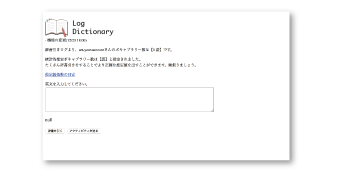

Sato Maya
佐藤 茉弥
複雑コース
英単語ツールを作っています
辞書引き作業を効率化する語彙強化学習支援ツール
研究内容
学習状況のフィードバックを積極的に行なう事が,学習者の学習意欲の向上を促すものとして注目されています。私の研究では，英文を読む際の辞書引き作業を補助しながら，日々の学習による語彙の増加を学習者へフィードバックするための語彙強化学習支援ツールの提案を行っています。

研究室のポイント
将来デザイナーやエンジニアとして活躍したい人はぜひ美馬研究室へ。実際にサービスを作り出す体験は大きな経験になります。ゼミでは時には厳しいコメントが飛び交いますが，それも大きな学びに繋がりますよ。
用いるスキル
Ruby JavaScript SQlite XML HTML
卒業後の進路
最近二宮くんをCMに使いだしたBig(?)ベンチャーでWebエンジニアやります。
後輩にメッセージ
就活と卒研で大変になるとは思いますが，それを全力で乗り切ることで成長を感じられる1年にしてください。